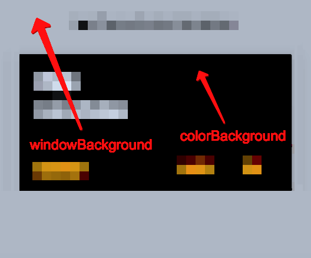

Stylish Apps
Инструменты
AppCompat Library
Resources
- colors.xml
- drawables.xml
- styles.xml / themes.xml
- attrs.xml
- Theme
- набор атрибутов
- Style
- значения атрибутов
Цветовые обозначения
- Название атрибута
- Название ресурса
- Название стиля или темы
- Ключевой вопрос
Styles

Q: Как раскрасить кнопку?
Параметры темы
- ?style
- ?style
Все определяется в стиле
<item name="background">@drawable/btn_default_material</item>
<item name="textAppearance">?attr/textAppearanceButton</item>
<item name="minHeight">48dip</item>
<item name="minWidth">88dip</item>
<item name="stateListAnimator">@anim/button_state_list_anim_material</item>
<item name="focusable">true</item>
<item name="clickable">true</item>
<item name="gravity">center_vertical|center_horizontal</item>
Параметры темы
- ?style
- ?style
значения по-умолчанию
- Widget.AppCompat.Button
- Widget.AppCompat.Button.Borderless
Параметры темы
- ?color_selector
Параметры темы
(deep inside)Widget.AppCompat.Button ↓
Base.Widget.AppCompat.Button ↓
Widget.Material.Button ↓
background: @drawable/btn_default_material ↓
<ripple android:color="?attr/colorControlHighlight">
<item>
<nine-patch
android:src="@drawable/btn_mtrl_alpha"
android:tint="?attr/colorButtonNormal">
</nine-patch>
</item>
</ripple>
Стили должны ссылаться на атрибуты темы
- Q: Как раскрасить кнопку?
- Изменить атрибут colorButtonNormal
Theme
Основные атрибуты
- android:windowLightStatusBar
- Цвет иконок (светлый/темный)
- android:windowBackground
- Фон главного окна
- android:colorBackground
- Фон всего (алерты, активити)
- android:colorForeground
- ?? противоположный цвет ??
Основные атрибуты
Правила
Как настроить базовую тему
- Атрибуты вместо цветов
- Расширить специфичными атрибутами
- Настроить селекторы
Как создавать разные темы
- Базовую тема (с кастомными атрибутами)
- Специфичные темы (переопределить ключевое)
Как создавать стили
- Не смешивать стиль и верстку
- Использовать наследование